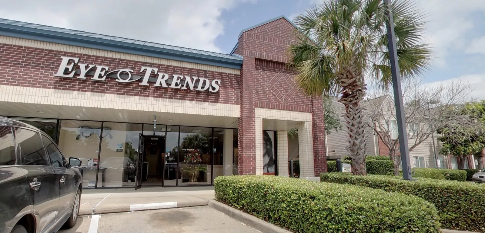
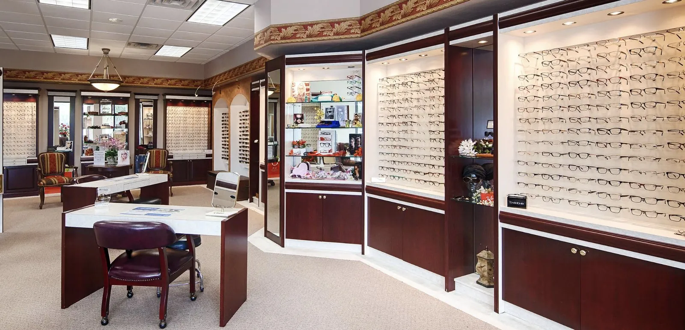

Our doctor
The same Clear Lake eye doctor, for 42 years
I'm Dr. Jerry Hyder, and I've cared for Clear Lake families myself, every visit, since 1984. Not a rotating roster, not a fifteen-minute counter - one doctor who takes the time to know you and remembers you the next time you come in. Here is how I think about what we do:
We are a private, one-doctor practice. We are not a big-box counter. Here, an eye exam is a relationship - the same doctor, taking the time, for 42 years.

What we stand on
Care you cannot rush,
from a doctor who stays.
Unhurried. A full 30 minutes, not a stopwatch.
Time to think it through and leave with your questions answered - we talk, we visit.
Personal. You are more than a pair of eyes.
We pay attention to the person in the chair - your work, your family, the way you actually live.
Continuity. The same doctor every visit, for decades.
Your history stays in one set of hands instead of getting handed off.
How it started
How this practice started, and why it stayed small
1984
The doors open in Clear Lake
I opened my practice here in Clear Lake in 1984 - a solo optometry office for Bay Area families, built to run at a human pace.
42 years
Same doctor, same community
Forty-two years later I'm still in the same community, seeing many of the same Bay Area families - some of whom have been coming to me for 40 years and more.
A while back
The moment it all made sense
A woman settled into my chair and said, "I was 12 when I first came to you." She was grown now, bringing her own children in for their exams - the kind of moment that only happens when one doctor stays put and keeps showing up, year after year.
Today
Small, on purpose
I could have grown it into something bigger - more chairs, more doctors, more volume - but I wanted a practice where I actually know the people I take care of. Small, personal, and here for the long haul was the plan, not an accident.
Meet the doctor
Who I am, in plain terms
Before any of the credentials, here is what matters most: I'm the doctor you will actually see, this year and the next.
Dr. Jerry Hyder, OD
Licensed therapeutic optometrist · Clear Lake
I earned my optometry degree at the University of Houston College of Optometry. I'm a licensed therapeutic optometrist, which simply means I'm trained to diagnose and treat a range of medical eye conditions, not only to write you a prescription for glasses. And I'm a member of the Clear Lake Chamber, part of the community I've served all these years.
I don't have a wall of accolades to point to, and honestly, I don't need one. What I have is a room full of people I know by name.

Why it takes longer
A real exam is two things at once
A typical appointment with me runs about 30 minutes. We talk, we visit. I ask what has been going on - the headaches at the end of a screen day, the glare when you drive at night, the small print that is not as easy as it used to be - and I listen before I ever pick up an instrument.
That time is not padding. A real exam is a careful check of how you see and a genuine look at the health of your eyes. A lot of what I catch - dry eye, the early signs of glaucoma, the changes that come with diabetes - does not announce itself, and you cannot do it justice in a rushed fifteen-minute, conveyor-belt visit. I would rather understand the person in the chair than move the line along.
The proof is the patients
Trusted in Clear Lake for 42 years
That is the record, and there is nothing manufactured behind it. What a chain cannot copy is the continuity: I have families here where I cared for the parents and now look after their children, and in some cases a third generation coming through the same door. People do not keep coming back across decades unless the care has earned it.
- Serving the Bay Area since 1984, one doctor throughout.
- Patients who have stayed with me for 40 years and more.
- Parent, then child, and in some cases a third generation.

In his own words
Most of us would consider ourselves private - we're not an America's Best... I have patients who have been with me for 40 years... I don't want a McDonald's-type practice.
That is really the whole philosophy. I have nothing against fast and cheap - it just is not what we are. We are the practice you settle in with and stay with.

Come meet us
The next step is simple
If any of this sounds like the kind of care you have been looking for, the next step is simple. Request an appointment online in a couple of minutes, or call and reach a real person at the front desk who can find you a time.
We accept most vision and medical plans - VSP, EyeMed, Superior, Aetna, Blue Cross Blue Shield, Medicare, Cigna, and Tricare among them. Coverage varies by plan, so call for pricing and we will walk you through exactly what yours includes.
Find us: Eye Trends Vision & Glasses Center · Dr. Hyder, OD · 515 Bay Area Blvd #300, Houston, TX 77058 · (281) 488-0066
Hours: Mon, Tue, Thu, Fri 9:30-6:30 · Wed closed · Sat 9-1 · Sun closed